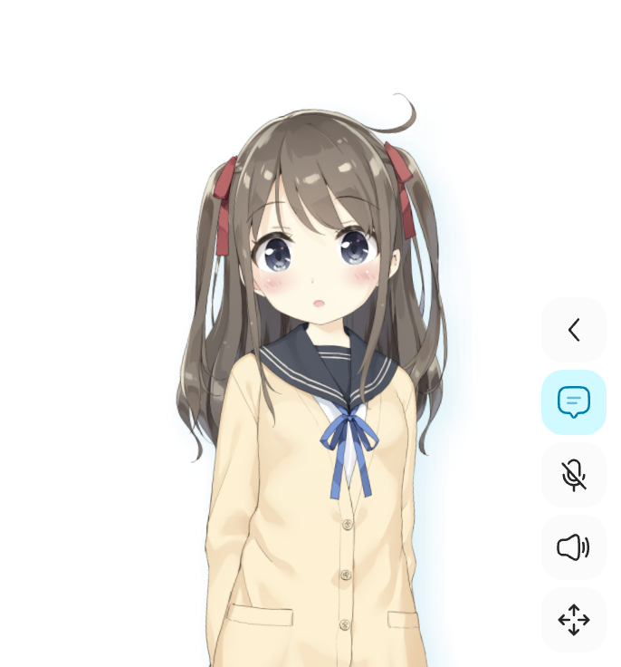
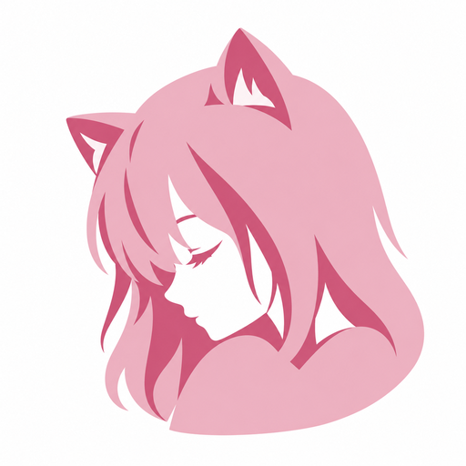

熟悉的 AIRI，清楚一点的陪伴。
保留角色、控制岛和独立聊天窗，把会话、语音与看屏的操作说清楚。

AIRI 参考角色 · Aimy 正式角色待定
入口可发现
会话列表有独立按钮；聊天设置可直达。保留控制岛的位置与收放习惯。
反馈不打断
授权说明就近展开，错误就地恢复；发送按钮与“打断回复”各有稳定位置。
状态不混淆
系统已授权、正在采集和正在输出分别显示。看屏是独立设计入口。
猫耳侧脸，重新安排画面的重心。
保留原来的亲近感，明确面部焦点，收拢发部与衣袖，让轮廓更完整。


保留识别，重构构图
视线与鼻部保持人类侧脸比例。耳尖与头发有清楚间隔，底部收成一条安静的弧线。
浅樱粉承担大形，较深玫粉帮助轮廓辨识。界面只在身份位置使用图标。
本次是图像生成的白底位图母版；未冒称 SVG。正式图标封装、16 px 光学简化与原生安装验收另行进行。
在界面里如何使用
我在这里，慢慢说。
对话头像设置独立，下一步明确。
沿用 AIRI 的设置窗口与详情返回结构，先呈现配置摘要，再进入具体项目。
让陪伴按你的习惯来。
选择一项，查看当前状态与需要完成的设置。
外观与阅读
按使用环境选择。
固定字号与行高，保持清楚阅读。
关闭非必要过渡，保留文字状态。
声音与输入
持续聆听，允许自然插话。开启后始终显示当前状态。
录制、检查、再发送；位于聊天输入栏。
默认设备；实际接入后提供实时可用性状态。
连接你的模型服务
按服务商、配置、模型逐步确认。
- 选择服务
- 检查连接
- 选择模型
权限与数据
记忆保存方式、观察频率与窗口收起行为仍待对齐；本预览不替代这些决定。
同一套组件，完整的状态。
对齐 AIRI 的操作模型；品牌进入配色、字体、密度和身份识别。
行动与恢复
一个区域一个主要动作，失败时给出可恢复的出口。
附件与输入
读取、就绪、错误和移除就近呈现，不移动发送按钮。
仅预览附件，不表示模型已经理解图片。
Enter 发送 · Shift + Enter 换行 · 中文选字时不误发送
状态词汇
文字、图形与语义色共同表达，拒绝假进度与假声波。
颜色与阅读
粉色用于行动与选中，文本保持稳定的对比度。
正文 15 px / 1.8 行高；标签 13 px；说明 12 px。
4 px 间距网格 · 控件 12 px 圆角 · 150–220 ms 状态过渡有来源，也有实施边界。
学习 Impeccable 的产品设计方法，对照 AIRI 的真实源码，把改进写成可交接规则。
保留的 AIRI 结构
- 桌面角色与控制岛。
- 独立聊天窗、标题栏和会话抽屉。
- 固定输入区、图片预览和单条语音输入。
- 独立设置、详情返回与服务配置流程。
这版的具体改进
- 历史会话与设置入口显式可见。
- 语音陪伴与“录一条语音”分别命名。
- “已授权”和“正在采集”分别显示。
- 单独的打断动作，发送位置保持稳定。
- 失败保留草稿和附件；同页可重试。
- 看屏明确来源与停止入口，不继承电脑操作按钮。
本包是设计参考，未接入产品源码。图标与角色资产分开管理；正式角色、音色、记忆保存、观察频率与收起窗口语义仍待定。所有功能效果均需后续实际接入和验收。